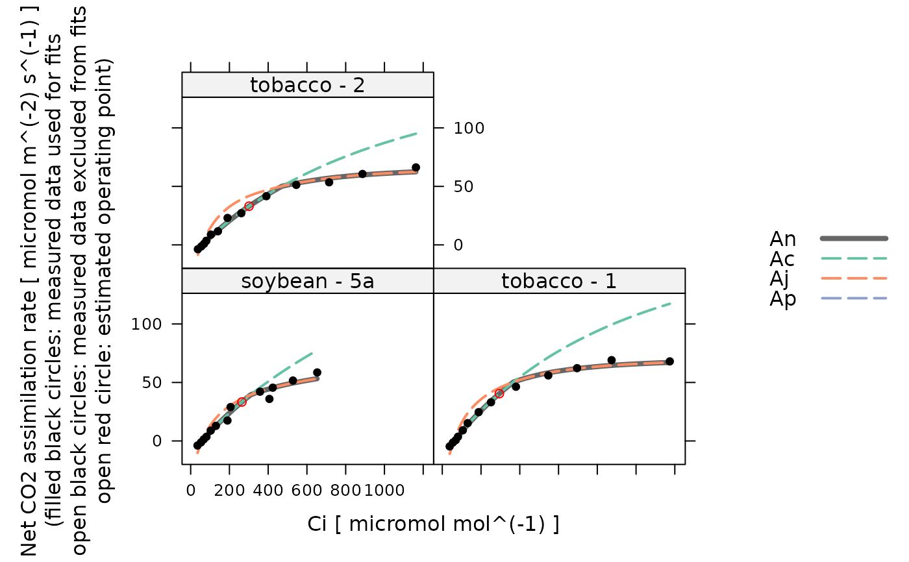
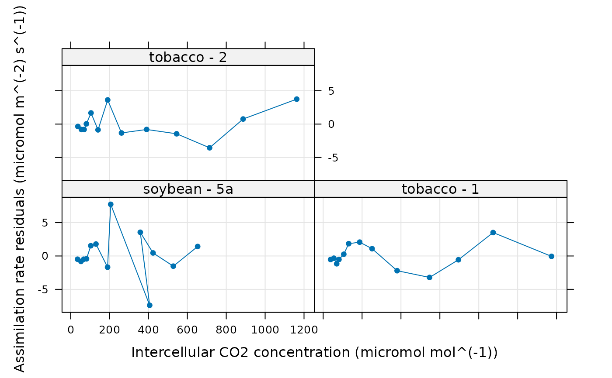

Fits a C3 assimilation model to an experimental curve
fit_c3_aci.RdFits a model to an experimentally measured C3 CO2 response curve using the
data in the exdf object along with a few other user-supplied
parameters. This function can accomodate alternative column names for the
variables taken from the Licor file in case they change at some point in the
future. This function also checks the units of each required column and will
produce an error if any units are incorrect.
Usage
fit_c3_aci(
replicate_exdf,
a_column_name = 'A',
cc_column_name = 'Cc',
total_pressure_column_name = 'total_pressure',
kc_column_name = 'Kc',
ko_column_name = 'Ko',
gamma_star_column_name = 'Gamma_star',
vcmax_norm_column_name = 'Vcmax_norm',
rd_norm_column_name = 'Rd_norm',
j_norm_column_name = 'J_norm',
POc = 210000,
atp_use = 4.0,
nadph_use = 8.0,
alpha = 0.0,
curvature_cj = 1.0,
curvature_cjp = 1.0,
OPTIM_FUN = default_optimizer(),
initial_guess_fun = initial_guess_c3_aci(
Oc = POc,
atp_use = atp_use,
nadph_use = nadph_use,
a_column_name = a_column_name,
cc_column_name = cc_column_name,
kc_column_name = kc_column_name,
ko_column_name = ko_column_name,
gamma_star_column_name = gamma_star_column_name,
vcmax_norm_column_name = vcmax_norm_column_name,
rd_norm_column_name = rd_norm_column_name,
j_norm_column_name = j_norm_column_name
),
lower = c(0, 0, 0, 0),
upper = c(40, 1000, 100, 1000),
fixed = c(40, NA, NA, NA),
cj_crossover_min = NA,
cj_crossover_max = NA
)Arguments
- replicate_exdf
An
exdfobject representing one CO2 response curve.- a_column_name
The name of the column in
replicate_exdfthat contains the net assimilation inmicromol m^(-2) s^(-1).- cc_column_name
The name of the column in
replicate_exdfthat contains the chloroplastic CO2 concentration inmicromol mol^(-1).- total_pressure_column_name
The name of the column in
replicate_exdfthat contains the total pressure inbar.- kc_column_name
The name of the column in
replicate_exdfthat contains the Michaelis-Menten constant for rubisco carboxylation inmicromol mol^(-1).- ko_column_name
The name of the column in
replicate_exdfthat contains the Michaelis-Menten constant for rubisco oxygenation inmmol mol^(-1).- gamma_star_column_name
The name of the column in
replicate_exdfthat contains theGamma_starvalues inmicromol mol^(-1).- vcmax_norm_column_name
The name of the column in
replicate_exdfthat contains the normalizedVcmaxvalues (with units ofnormalized to Vcmax at 25 degrees C).- rd_norm_column_name
The name of the column in
replicate_exdfthat contains the normalizedRdvalues (with units ofnormalized to Rd at 25 degrees C).- j_norm_column_name
The name of the column in
replicate_exdfthat contains the normalizedJvalues (with units ofnormalized to J at 25 degrees C).- POc
The partial pressure of O2 in the chloroplast, expressed in
microbar. This is often assumed to be the ambient value. For air measurements, this would be 21 percent O2, which is about 210000 microbar at standard atmospheric pressure. For low oxygen measurements, this would be 2 percent O2, which is about 20000 microbar.- atp_use
The number of ATP molecules used per C3 cycle.
- nadph_use
The number of NADPH molecules used per C3 cycle.
- alpha
A dimensionless parameter greater than or equal to 0 and less than or equal to 1 that represents the fraction of glycolate carbon not returned to the chloroplast.
- curvature_cj
A dimensionless quadratic curvature parameter greater than or equal to 0 and less than or equal to 1 that sets the degree of co-limitation between
WcandWj. A value of 1 indicates no co-limitation.- curvature_cjp
A dimensionless quadratic curvature parameter greater than or equal to 0 and less than or equal to 1 that sets the degree of co-limitation between
WcjandWp. A value of 1 indicates no co-limitation.- OPTIM_FUN
An optimization function that accepts the following input arguments: an initial guess, an error function, lower bounds, and upper bounds. It should return a list with the following elements:
par,convergence,value, and (optionally)message. The bounded optimizers from thedfoptimpackage meet these requirements. The base functionoptimwith theL-BFGS-Bmethod can also be used.- initial_guess_fun
A function that estimates values of
TPU,J,Rd, andVcmax;initial_guess_funshould have one input argument (anexdfobject representing a single response curve and should return a vector of the estimated values (at 25 degrees C) in the order above.- lower
A numeric vector containing lower bounds for the values of
TPU,J,Rd, andVcmax, in that order.- upper
A numeric vector containing upper bounds for the values of
TPU,J,Rd, andVcmax, in that order.- fixed
A numeric vector specifying fixed values of
TPU,J,Rd, andVcmax, in that order. Values ofNAindicate that the corresponding parameter is not fixed and should be varied during the optimization procedure. The default value of this argument fixesTPUto its upper limit (so net assimilation is never limited by phosphate utilization) and allows the other parameters to vary. To vary all of the parameters, setfixedtoc(NA, NA, NA, NA).- cj_crossover_min
The minimum value of
Cc(in ppm) whereAjis allowed to become the overall rate-limiting factor. Ifcj_crossover_minis set toNA, this restriction will not be applied.- cj_crossover_max
The maximum value of
Cc(in ppm) whereAjis allowed to be smaller thanAc. Ifcj_crossover_maxis set toNA, this restriction will not be applied.
Details
This function calls calculate_c3_assimilation to calculate
values of net assimilation. The user-supplied optimization function is used to
vary the values of TPU, J, Rd, and Vcmax to find
ones that best reproduce the experimentally measured values of net
assimilation.
The photosynthesis model represented by calculate_c3_assimilation is
not smooth in the sense that small changes in the input parameters do not
necessarily cause changes in its outputs. This is related to the final step in
the calculations, where the overall assimilation rate is taken to be the
minimum of three enzyme-limited rates. For example, if the assimilation rate
is never phosphate-limited, modifying TPU will not change the model's
outputs. For this reason, derivative-based optimizers tend to struggle when
fitting C3 A-Ci curves. Best results are obtained using derivative-free
methods. It has been found that dfoptim::nmkb is often able to find a
good fit.
Sometimes the optimizer will choose biologically unreasonable parameter values
that nevertheless produce good fits to the supplied assimilation values. A
common problem is that the fit result may not follow the expected progression
of Ac-limited -> Aj-limited -> Ap-limited assimilation as Cc
increases. In this case, the optional cj_crossover_min and
cj_crossover_max can be used to constrain the range of Cc values
(in ppm) where Aj is allowed to be the overall rate limiting factor.
See the _Analyzing C3 A-Ci Curves_ vignette for an example of how these
arguments can be used to improve the quality of a fit.
By default, this function will use initial_guess_c3_aci to make rough
estimates of the parameters to use as an initial guess. However, it is
possible to also use a fixed initial guess by using something like the
following for the initial_guess_fun:
function(x){c(10, 100, 0.5, 90)}, which would set the initial guess to
TPU = 10, J = 100, Rd = 0.5, and Vcmax = 90.
By default, this function fixes TPU to a high value (40 micromol
m^(-2) s^(-1)) and allows the other parameters to be fitted. This behavior
is determined by the value of the fixed input argument, and the value
of TPU specified in this way will override any value returned by
initial_guess_fun.
This function assumes that replicate_exdf represents a single
C3 A-Ci curve. To fit multiple curves at once, this function is often used
along with by.exdf and consolidate.
Value
A list with two elements:
fits: Anexdfobject including the original contents ofreplicate_exdfalong with several new columns:The fitted values of net assimilation will be stored in a column whose name is determined by appending
'_fit'to the end ofa_column_name; typically, this will be'A_fit'.Residuals (measured - fitted) will be stored in a column whose name is determined by appending
'_residuals'to the end ofa_column_name; typically, this will be'A_residuals'.The other outputs from
calculate_c3_assimilationwill be stored in columns with the usual names:TPU,Vcmax_tl,Rd_tl,J_tl,Ac,Aj, andAp.
parameters: Anexdfobject including the identifiers, fitting parameters, and convergence information for the A-Ci curve:The best-fit values are stored in the
TPU,J_at_25,Rd_at_25, andVcmax_at_25columns.For parameters that depend on leaf temperature, the average leaf-temperature-dependent values are stored in
X_tl_avgcolumns:J_tl_avg,Rd_tl_avg, andVcmax_tl_avg.The
convergencecolumn indicates whether the fit was successful (==0) or if the optimizer encountered a problem (!=0).The
fevalcolumn indicates how many cost function evaluations were required while finding the optimal parameter values.The residual stats as returned by
residual_statsare included as columns with the default names:dof,RSS,RMSE, etc.
Examples
# Read an example Licor file included in the PhotoGEA package
licor_file <- read_gasex_file(
system.file('extdata', 'c3_aci_1.xlsx', package = 'PhotoGEA', mustWork = TRUE)
)
# Define a new column that uniquely identifies each curve
licor_file[, 'species_plot'] <-
paste(licor_file[, 'species'], '-', licor_file[, 'plot'] )
# Organize the data
licor_file <- organize_response_curve_data(
licor_file,
'species_plot',
c(9, 10, 16),
'CO2_r_sp'
)
# Specify an infinite mesophyll conductance (so `Cc` = `Ci`)
licor_file <- set_variable(
licor_file,
'gmc', 'mol m^(-2) s^(-1) bar^(-1)', value = Inf
)
# Calculate the total pressure in the Licor chamber
licor_file <- calculate_total_pressure(licor_file)
# Calculate Cc
licor_file <- apply_gm(licor_file)
# Calculate temperature-dependent values of C3 photosynthetic parameters
licor_file <- calculate_arrhenius(licor_file, c3_arrhenius_bernacchi)
# Fit just one curve from the data set (it is rare to do this)
one_result <- fit_c3_aci(
licor_file[licor_file[, 'species_plot'] == 'tobacco - 1', , TRUE]
)
# Fit all curves in the data set (it is more common to do this)
aci_results <- consolidate(by(
licor_file,
licor_file[, 'species_plot'],
fit_c3_aci
))
# View the fitting parameters for each species / plot
col_to_keep <- c(
'species', 'plot', # identifiers
'TPU', 'J_at_25', 'Rd_at_25', 'Vcmax_at_25', # parameters scaled to 25 degrees C
'J_tl_avg', 'Rd_tl_avg', 'Vcmax_tl_avg', # average temperature-dependent values
'dof', 'RSS', 'MSE', 'RMSE', 'RSE', # residual stats
'convergence', 'convergence_msg', 'feval', 'optimum_val' # convergence info
)
aci_results$parameters[ , col_to_keep, TRUE]
#> species [UserDefCon] (NA) plot [UserDefCon] (NA)
#> 1 soybean 5a
#> 2 tobacco 1
#> 3 tobacco 2
#> TPU [fit_c3_aci] (micromol m^(-2) s^(-1))
#> 1 40
#> 2 40
#> 3 40
#> J_at_25 [fit_c3_aci] (micromol m^(-2) s^(-1))
#> 1 201.6657
#> 2 232.7659
#> 3 206.5354
#> Rd_at_25 [fit_c3_aci] (micromol m^(-2) s^(-1))
#> 1 1.992828e-08
#> 2 4.672514e-01
#> 3 5.529838e-01
#> Vcmax_at_25 [fit_c3_aci] (micromol m^(-2) s^(-1))
#> 1 119.9155
#> 2 145.3634
#> 3 124.3802
#> J_tl_avg [fit_c3_aci] (micromol m^(-2) s^(-1))
#> 1 283.2928
#> 2 320.6172
#> 3 285.9938
#> Rd_tl_avg [fit_c3_aci] (micromol m^(-2) s^(-1))
#> 1 2.814329e-08
#> 2 6.461787e-01
#> 3 7.690592e-01
#> Vcmax_tl_avg [fit_c3_aci] (micromol m^(-2) s^(-1)) dof [residual_stats] (NA)
#> 1 192.4915 10
#> 2 226.5546 10
#> 3 195.3871 10
#> RSS [residual_stats] ((micromol m^(-2) s^(-1))^2)
#> 1 141.57767
#> 2 39.04257
#> 3 49.64244
#> MSE [residual_stats] ((micromol m^(-2) s^(-1))^2)
#> 1 10.890590
#> 2 3.003274
#> 3 3.818649
#> RMSE [residual_stats] (micromol m^(-2) s^(-1))
#> 1 3.300089
#> 2 1.732996
#> 3 1.954136
#> RSE [residual_stats] (micromol m^(-2) s^(-1)) convergence [fit_c3_aci] ()
#> 1 3.762681 0
#> 2 1.975919 0
#> 3 2.228058 0
#> convergence_msg [fit_c3_aci] () feval [fit_c3_aci] ()
#> 1 Successful convergence 248
#> 2 Successful convergence 157
#> 3 Successful convergence 201
#> optimum_val [fit_c3_aci] ()
#> 1 141.57767
#> 2 39.04257
#> 3 49.64244
# View the fits for each species / plot
lattice::xyplot(
Ac + Aj + Ap + A_fit + A ~ Ci | species_plot,
data = aci_results$fits$main_data,
type = 'b',
pch = 16,
auto = TRUE,
grid = TRUE,
xlab = paste0('Intercellular CO2 concentration (', aci_results$fits$units$Ci, ')'),
ylab = paste0('Assimilation rate (', aci_results$fits$units$A, ')')
)

# View the residuals for each species / plot
lattice::xyplot(
A_residuals ~ Ci | species_plot,
data = aci_results$fits$main_data,
type = 'b',
pch = 16,
auto = TRUE,
grid = TRUE,
xlab = paste0('Intercellular CO2 concentration (', aci_results$fits$units$Ci, ')'),
ylab = paste0('Assimilation rate residuals (', aci_results$fits$units$A_residuals, ')')
)
